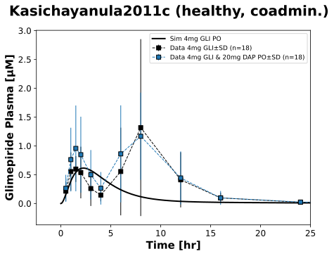

|  |
../../../../experiments/studies/kasichayanula2011c.py
from typing import Dict
from sbmlsim.data import DataSet, load_pkdb_dataframe
from sbmlsim.fit import FitMapping, FitData
from pkdb_models.models.glimepiride.experiments.base_experiment import GlimepirideSimulationExperiment
from pkdb_models.models.glimepiride.experiments.metadata import (
Tissue, Route, Dosing, ApplicationForm, Health, Fasting,
GlimepirideMappingMetaData, Coadministration
)
from sbmlsim.plot import Axis, Figure
from sbmlsim.simulation import Timecourse, TimecourseSim
from pkdb_models.models.dapagliflozin.helpers import run_experiments
class Kasichayanula2011c(GlimepirideSimulationExperiment):
"""
Simulation experiment of Kasichayanula2011c.
FIXME: food after 4 hours with possible strong effect on pharmacokinetics
"""
colors = {
"GLI4": "black",
"DAP20, GLI4": "tab:blue",
}
interventions = list(colors.keys())
def datasets(self) -> Dict[str, DataSet]:
dsets = {}
for fig_id in ["Fig4"]:
df = load_pkdb_dataframe(f"{self.sid}_{fig_id}", data_path=self.data_path)
for label, df_label in df.groupby("label"):
dset = DataSet.from_df(df_label, self.ureg)
# unit conversion
if label.startswith("glimepiride_"):
dset.unit_conversion("mean", 1 / self.Mr.gli)
dsets[label] = dset
return dsets
def simulations(self) -> Dict[str, TimecourseSim]:
Q_ = self.Q_
tcsims = {}
tcsims[f"po_gli4"] = TimecourseSim(
[Timecourse(
start=0,
end=49 * 60,
steps=500,
changes={
**self.default_changes(),
"PODOSE_gli": Q_(4, "mg")
},
)]
)
return tcsims
def fit_mappings(self) -> Dict[str, FitMapping]:
mappings = {}
for intervention in self.interventions:
mappings[f"fm_po_{intervention}"] = FitMapping(
self,
reference=FitData(
self,
dataset=f"glimepiride_{intervention}_S3",
xid="time",
yid="mean",
yid_sd="mean_sd",
count="count",
),
observable=FitData(
self,
task=f"task_po_gli4",
xid="time",
yid=f"[Cve_gli]",
),
metadata=GlimepirideMappingMetaData(
tissue=Tissue.PLASMA,
route=Route.PO,
application_form=ApplicationForm.TABLET,
dosing=Dosing.SINGLE,
health=Health.HEALTHY,
fasting=Fasting.FED, # fast of at least 10 h, with a 4-h fast postdosing on PK sampling days
coadministration=(
Coadministration.DAPAGLIFLOZIN if "DAP" in intervention
else Coadministration.NONE
),
outlier=True # very strange peaks, probably due to food
),
)
return mappings
def figures(self) -> Dict[str, Figure]:
fig = Figure(
experiment=self,
sid="Fig4",
name=f"{self.__class__.__name__} (healthy, coadmin.)",
)
plots = fig.create_plots(
xaxis=Axis(self.label_time, unit=self.unit_time),
yaxis=Axis(self.label_gli_plasma, unit=self.unit_gli),
legend=True
)
plots[0].xaxis.max = 25
# simulation
plots[0].add_data(
task=f"task_po_gli4",
xid="time",
yid=f"[Cve_gli]",
label=f"Sim 4mg GLI PO",
color="black",
)
for intervention in self.interventions:
# study data
plots[0].add_data(
dataset=f"glimepiride_{intervention}_S3",
xid="time",
yid="mean",
yid_sd="mean_sd",
count="count",
label=f"Data 4mg GLI" if intervention == "GLI4" else f"Data 4mg GLI & 20mg DAP PO",
color=self.colors[intervention],
)
return {fig.sid: fig}
if __name__ == "__main__":
run_experiments(Kasichayanula2011c, output_dir=Kasichayanula2011c.__name__)
{kind=link}